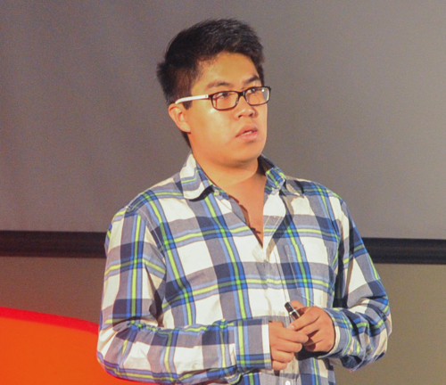

| Projects | Resume | Github | Medium |
|---|

I'm a Mechatronics Engineer (that's what my diploma says) born and raised in Mexico City. I did iOS development for a while and now I turned to Data Science. I enjoy applying my technical skills to problems with social impact.
Like the time that I helped to stop a 9.3 million fraud. Or when I worked in a project to understand the causes of home abandonment in Mexico with some cool folks.
After getting my B.S. degree, I moved to the Center for Data Science and Public Policy at The University of Chicago where I was a Data Science Fellow.
In 2016, I moved back home to do the Applied Statistics program at UNAM-IIMAS and served as Lead Backend Engineer at Krieger.
I'm now based in New York, NY. Currently pursuing a M.S in Data Science at Columbia University and working as Research Assistant in Professor Liam Paninki's Lab in the Neuroscience and Statistics department. Interested in Interpretable Machine Learning, AutoML, Deep Learning and Computational Neuroscience.
You can contact me on e.[last name]@columbia.edu
I sometimes write in Medium and tweet often. I also have a LinkedIn profile and code on Github.